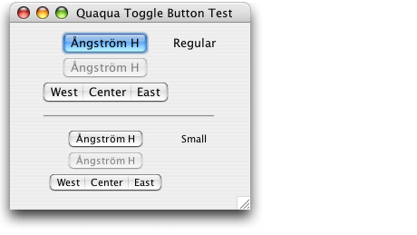

Property |
Type | Notes |
|---|---|---|
|
java.lang.String |
Values: "regular", "small" |
|
java.lang.String |
Values: "toggle", "toggleEast", "toggleCenter", "toggleWest", "toolBarTab" |
JButton |
java.lang.String |
Values: "square", "gradient", "bevel", "segmented" |
JButton |
java.lang.String |
Values: "first", "middle", "last", "only" |
Quaqua.Component.visualMargin |
java.awt.Insets |
See layout |
This client property can be used to change the visual margin of the JButton. For details see layout.
The picture below shows the effect of the styles. The styles are available for the regular System Font of Mac OS X (Lucida Grande 13) and the Small System Font (Lucida Grande 11). The styles work also with other font sizes, but then, the results aren't necessarily optimal.

You can specify a style using the client property Quaqua.Button.style
|